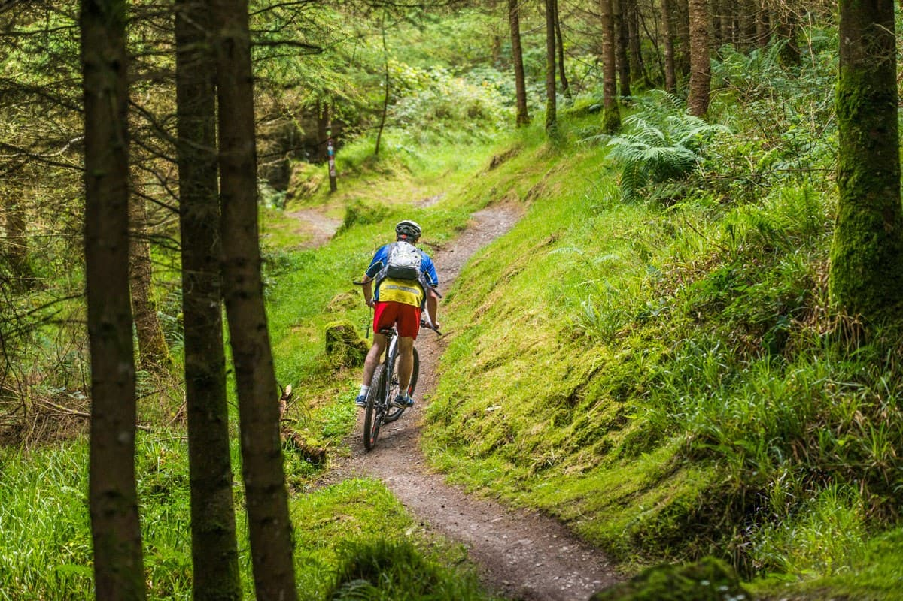

Walking & Hiking
Scenic Trails: Explore a network of well-marked routes ranging from gentle woodland walks to challenging mountain hikes.
Galtee Mountains Access: Enjoy direct access to Ireland’s highest inland mountain range with panoramic views across the valley.
Diverse Landscapes: Walk through forests, open moorland, lakeside paths, and rolling farmland in one of Ireland’s most picturesque regions.
Guided Walks Available: Join local guides for themed walks that highlight wildlife, history, and geological features of the Glen of Aherlow.

Historic Landmarks
Saint Pecaun’s Church & Holy Well: An early Christian site featuring ancient stone remains and a revered holy well steeped in local legend.
Galtee Castle Estate: Explore the grounds of the former 18th-century estate, once a grand country manor with rich historical ties.
Aherlow’s Priory Ruins: Atmospheric monastic remnants that offer insight into the region’s medieval past.
The Christ the King Statue: A well-known local landmark erected in the 1950s, providing panoramic views over the Glen and commemorating the Holy Year.
Traditional Farmsteads & Old Stone Bridges: Scattered throughout the valley, showcasing rural Irish architecture and centuries of agricultural heritage.
Nearby Towns & Attractions
Tipperary Town: Just a short drive away, offering shops, cafés, traditional pubs, and cultural attractions.
Cahir Castle: One of Ireland’s best-preserved medieval castles, set on the River Suir and perfect for a day trip.
The Rock of Cashel: A world-famous historic site featuring ancient architecture and sweeping countryside views.
Mitchelstown Caves: Impressive limestone caves with guided tours showcasing spectacular underground formations.
Leisure & Relaxation
Peaceful Countryside Setting: Unwind in the tranquil landscapes of the Glen of Aherlow, surrounded by forests, mountains, and open green spaces.
Wellness & Spa Options: Enjoy access to nearby spa treatments, wellness centres, and relaxation therapies.
Scenic Picnic Spots: Discover quiet viewpoints and riverside areas ideal for leisurely picnics and soaking in the scenery.
Slow-Paced Exploration: Take gentle strolls, photography walks, or simply enjoy the fresh mountain air at your own pace.